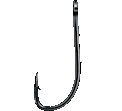

<br><br><br>
<h1>Livestream</h1>
<h2>
  We plan to make a livestream of the ceremony available for folks who can't
  make it in person.  Once it's ready, we'll post the link for that on this
  page.
  <br><br>
  Swim back here closer to the ceremony for more updates!
  <br>
  &lt;&gt;&lt;&nbsp;&nbsp;&nbsp;&nbsp;~&nbsp;&nbsp;~&nbsp;&nbsp;&nbsp;&nbsp;&lt;&gt;&lt;&nbsp;&nbsp;&nbsp;&nbsp;~&nbsp;&nbsp;~&nbsp;&nbsp;&nbsp;&nbsp;&lt;&gt;&lt;
</h2>

<div class="fishhook">
<!--
  TODO|kevin WAY TOO HIGH-EFFORT... FOR NOW: JANKY FISHING MINIGAME LMFAO
  show some message if you make the fishhook intersect with some specific fish
  image in the page, and then hide the fish :p
-->
<div class="line"></div>
  
</div>

<div class="page-emblem">
  
</div>

<style>
  /* TODO|kevin sooo many more feesh */
  #livestream {
    background-image:
      url('/images/wedding/ocean/rocksseaweed.gif'),
      url('/images/wedding/bgs/dolphinleap.gif'),
      url('/images/wedding/bgs/coralborder.gif'),
      url('/images/wedding/bgs/sand.png'),
      url('/images/wedding/bgs/bubbles.gif'),
      url('/images/wedding/bgs/water-swirl-tile.gif');
    background-position:
      bottom left,
      top,
      bottom 160px left 0,
      bottom,
      center,
      center;
    background-repeat:
      no-repeat,
      repeat-x,
      repeat-x,
      repeat-x,
      repeat,
      repeat;
    background-size: 250px, 300px, 100%, 600px, 290px, 128px;
    cursor: url('/images/wedding/curs/sea.png') 8 0, auto;
    min-height: 1000px;
  }
  body:not(.boring-mode) #livestream {
    padding-top: 70px;
  }
  #livestream .fishhook {
    pointer-events: none;
    position: fixed;
    right: 0;
    top: 0;
  }
  #livestream .fishhook .line {
    height: 200px;
    margin-left: 75px;
    width: 0;
  }
  body:not(.boring-mode) #livestream .fishhook .line {
    border-left: 1px solid white;
    border-right: 1px solid black;
  }
  #livestream .go-back {
    color: transparent;
  }
  #livestream .go-back::after {
    background-image: url('/images/wedding/home/fishin.gif');
    background-size: cover;
    content: "";
    display: block;
    height: 100px;
    width: 77px;
  }
</style>
